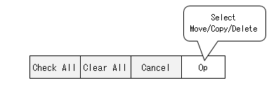
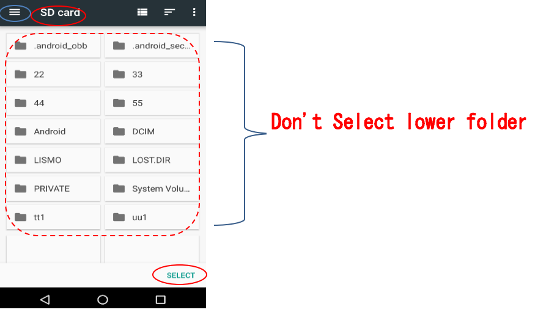
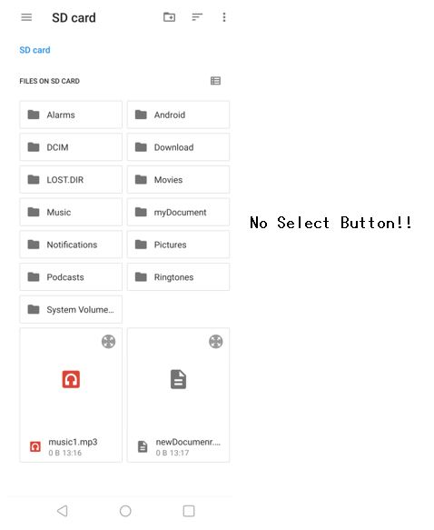
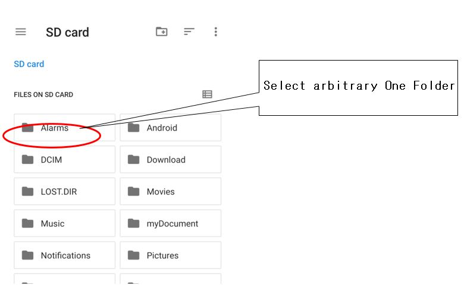
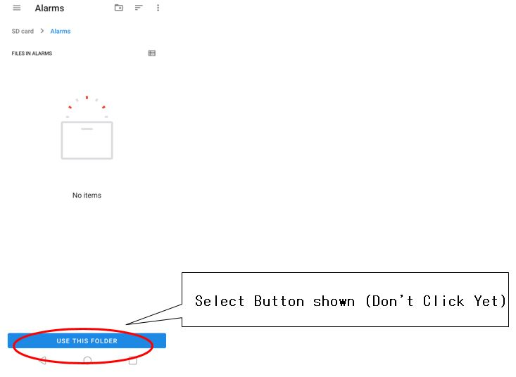
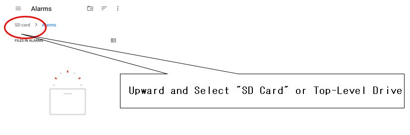
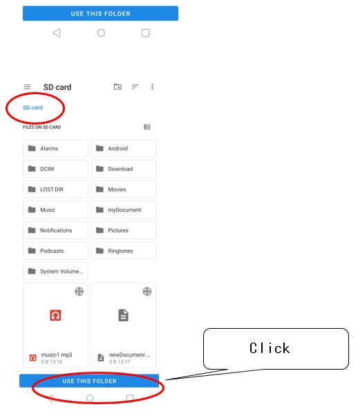
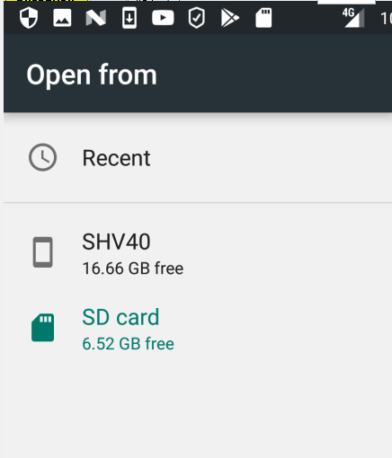

Page 2
Explorer Features
File and Folder Operation
For File and Folder Operation,
in Folder Tree(Left side pane) or File list(Right side pane), "Long-Click" File or Folder to operate.
Available operations list Popuped.
Navigation in Directory
You can navigate in several ways below:
- Click Folder Item in Folder Tree(left side) or File list pane(Right side).
- Folder-Navi Button on Upper Bar (If hidden, "Pre+" ,"Next+" Buttons on Lower Bar(in Explorer Mode only)).
- Folder Up Button on Multi Bar
- Select item in Folder Access History
- Select item in Shortcut ComboBox
- Click Shortcut file to Folder in File list pane
CAUTION:
In Tree-Pane, "+" at head of folder may not be shown even if that folder has sub folder because of process timing.
Create New File or Folder
(Operation)
- Click "New" button on Multi Bar, select Folder/File.
*Or Long-Click on any row in File-List pane and select "New Folder/File".
Copy and Move
(Operation)
- Long-click File or Folder to move(copy), and select Copy/Move in Menu.
- Message to select destination folder in left Tree Pane shown.
* If your destination is Root folder in Tree Pane, select Button of "To Tree Root" in this dialog.
(Root folder in Tree Pane is not shown. So you cannot specify it with Tree Pane)
- Let your destination folder visible in Tree Pane by expanding folder etc. operation.
*Other drive's Folder can specified(Long Click Current Path Label, select drive and follow tree path).
*If you are using Home-Folder and destination folder not shown in Tree pane(when destination is Upper than "Home"),
use Folder-Up button on Multi Bar to go to upper folder.
- Long-Click destnation folder.
- Confirmation Dialog shown. If destination is correct, Click OK.
Copy and Move of Multi Files or Folders
To operate Multi files or folders at one time, use Multi Select Mode.
(Operation)
- Click "Multi" button on Multi Bar.
- Checkboxs are shown at each row in File List Pane.
- Check items you want to Copy/Move.
* By Long-Click on Checkbox is also work as 'Shift+Click' in Windows to select continuous several items at one time.
- Click "Op" button on Multi Bar and select Copy/Move.
*Or with Long-Click on any line of File-List Pane, Select Copy/Move in Popup.

Rename File or Folder
(Operation)
- Long-click File or Folder to rename, and select "Rename" in Menu.
* For folder, you may do this in Tree Pane.
Delete File or Folder
(Operation)
- Long-click File or Folder to delete, and select "Delete" in Menu.
* For folder, you may select folder in Tree Pane.
To delete Multi files or folders
Use Multi-select mode(Click "Multi" button on Multi Bar).
Select several items by checking, and select "delete" on "Op" combo on Multi Bar.
(Long-Click on any line of File-List Pane also can be used to select "Op"eration-kind)
Sort
Can sort by File Name(Asc/Desc), File Size(Asc/Desc), Update Date(Asc/Desc) or File Extension(Asc/Desc)
*In sorting of Size, Update-Date or Extension, folders Not Sorted.
(Operation)
- Click "Sort" button on Multi Bar and select Name/Size/Update-Date/Extension.
- If you select same sort kind continuously, sorted by reverse order.
ShortCut *file: not Favorite list
Creating Shortcut (file) for specified folder or file via Popup Menu.
(Operation)
•
Long-Click file or folder on File-List pane(Folder in Left-Pane also OK).
•
Select "Create Shortcut" in popup menu.
This Operation makes selected item path memorizsed for preparing creating Shortcut.
Then Long Click a Folder in Left Pane to specify location in which you will Create Shortcut and select 'Pasete Shortcut' whenever you like to create shortcut.
* 'Paste Shortcut' menu is displayed only on folder in Left Pane.
* Shortcut Extension is 'lnk' for File and 'follnk' for Folder.
File Attributes
Size unit change automatically in byte/KB/MB.
You can freely set File Attributes' color, fontsize, visible/non-visible etc. in Preference.
* File attributes visibility is chenged by clicking "menu", select "File Attributes Show/Hide".
Thumbnail
You can chenge view from file list to Thumbnails by One Click of Thumbnail button on Multi Bar.
Change Thumbnail Size
Long-Click Thumbnail button on Multi Bar and select in Small/Middle/Large.
Re-Create thumbnail(for video file)
Moving media file or rename folder which includes media files causes to fail to show those thumbnails.
If so, you can Re-Create thumbnail in current folder without restarting Device.
(Operation)
In Explorer Mode, click Menu button and select "Re-Create thumbnail".
* Restarting Device always re-creates thumbnails for all media files.
Setting according to File Extension
(Color and Font)
You can freely set color, Font etc. for each Extension and for Folder item in File-List pane.
(How to Open that extensioned file)
you can select method used by default from among built-in Browser, built-in Editor or External App(new or old protocol)
(Operation)
• Long-Click file(or folder) on File-List pane which has Extension to set.
• Select "Extension Setting for [xxx]" in popup menu.
* For folder, select "Setting for Folder" item shown.
In this Dialog you can specify how to open file with that Extension when Simple Clicked.
Methods for open not selected here are shown in Popup Menu by Long-Clicking file item(with some exception).
* In preference, can set "External App (Old protocol)" not shown in Popup.
By Default, files with main Picture or Video Extension are set to be opened with Built-in Browser and
Text file with Built-in Editor.
* This app's original extensions (tellnk, follnk etc.) or extensions with fixed way to Open(apk etc.) can not be set.
"External App (Old protocol)" : used mainly for Apps (or app's Versions) for Android 5 or 6.
"External App"(=by New protocol) : mainly for Apps (or app's Versions) for Android 7 or later.
If an app you like to use not shown in Selection List(Android shows) with selecting 'External App',
try the other 'External App' in Old or New.
There is no guarantee that file can be opened normally in one of these external-App call. Recent Google's security Restriction
is much strong especially to SD Card and Other Apps Call(Google seems to be reluctant for users to utilize external storage except cloud).
If you have a file be read-only or can't use that App's full features when the file opened by external app and it not satisfy your demands, try below.
- If the file is in SD Card, move(or Copy) to Inner storage and open it.
- If you want to use file with full features anyhow, launch the external app and open the file from that app.
(This way is rational in a sense and probably desired by Google for now, though it is low-convenient and not smart for users...).
File Search
Searching file or folder below specified folder recursively.
(Operation)
Long-Click a folder on Left Pane of tree or on Right Pane of current and select 'File Search' in Popup Menu.
Search will be executed below the Long-Clicked folder.
CAUTION:
** For whole search for 'Current Storage', click Menu button and select "File Search in Current Storage".**
(Conditions)
Search available by string included in file name, size, extension, or update date.
Can specify file, folder or both as target.
Multi specification enable in File Name or Extension condition, separating by comma:
example:
"abc,1234,ttt" //'abc', '1234' or 'ttt' is included in file name.
"png,jpg" //File Extension is 'png' or 'jpg'.
etc.
(Upper Limit of Found Count)
Shown files Count in Search Result is limited(default:1000).
If exceed Found Count Limit, searching is stopped.
* Found Count Limit can changed in Preference.
* The more Shown file items in Search Result window is , the slower response is.
* In case of some Android version, directory depth of search(depth is 100 or so) causes App crash. For preventing,
please follow below:
- avoid searching extremely deep folder
- prune deep folder(Not use extremely deep folder)
- Use option of Directory Depth Limit for file Search in Preference(Set Non-Zero)
(Search Result Window)
- Can sort search result by "file Name", "Size", "Update Date" or file "location" condition, clicking button on Upper Bar.
- By clicking 'File Name' part of result item, can open that file(If that is URL link, web page opened in Web Mode).
- By Long-clicking 'File Location' part of result item, can open that folder(screen transits to Explorer mode).
* When Explorer or Browser Mode window shown by clicking file or folder on search result window,
you can go back to search result window by click 'Back Key' on the device.
As long as the Result content not discarded, you can go and back between Search Result window and Explorer(or Web Mode) window by "Back Key" on the device.
When finished File Search or back to Search-Condition window, Result content discarded, and you cannot transit to Result window by Back Key.
Home Directory
You can set "Home" Folder to one folder that you always work in.
By setting this, "Home" Folder is used as Tree-Root in Tree Pane and the Pane is used effectively(and with better response).
When Deep hierarchy, "Home" setting useful.
Current Path Expressioin on Upper Bar also chenges as leading from Home-Folder(not shown upper path than Home),
when current is below Home-Folder.
(Operation)
• Long-Click folder to set as Home-Folder in Folder-Tree pane and select "Set this Home Folder."
• To reset, Long-Click on any row in Folder-Tree pane and select "Reset Home Folder"
* By Preference setting, you can always use Full Path expression on Upper Bar despite of using Home-Folder.
* Home-Folder can set to each drive.
* When upper folder than Home-Folder is current, Tree-Root is changed temporarily.
CAUTION : When current is below Home-Folder, to move to upper than Home-Folder, can't use Folder-Tree pane. Use "Go to Up Directory" Button on Multi Bar.
Drive Change
You can change drive(storage) to show (ex. device Inner drive and external SD card )
by Long-Clicking Current Path String on Upper Bar.
Last accessed folder memorized for each Drive.
(Operation)
• Long-click Current Folder Label on Upper Bar and select Storage to show.
Folder History
Retain History of Folders you accessed. You can select one of them and go there again.
You can change count of history etc. in Preference.
(Operation)
Long-Click "Pre+" or "Next+" Button on Bar below(in Explorer mode) or on Bar above(always if not vanished by preference).
*'+' in caption of Button shows that this button has another function in Long-Click.
SD Card Write Permission
* for Android 5 or later
Even if Android version of your phone is Android 5 or later, you can Create File, Delete File or Copy from internal disk to External SD card.
When you do "write" operation(Create, Rename or Delete File or Folder) to external SD card for the first time,
SD card Write Permission Dialog(='Picker' dialog) as below shown .

Select Target Drive Root(Drive Itself!!), and click "Select".
*** Don't select lower folder ***
If other drive is shown, need to change drive in this dialog, using menu icon in upper bar.
< In case Select-Button not shown (In newer Android version) >>
In Permission Dialog,if Select-Button not shown, click one folder once and then select Top-Level drive(SD-Card) folder upward.





CAUTION:
SD card via USB cable by Card Reader etc. might not be enabled writing(
Because in dialog of Write Permission(shown above), left mentioned cable-connected drive might not be shown).

Once you give allowance to Write Access to a SD Card, basically ,you need not to do this for that card again.
* If you do "All Clear(includes SD card Permission)" in Preference of this app, you will be required to give allowance again.
* If same name always used as Drive Folder for different SD cards at your device,
even for the same SD card loaded before, Write Permission Allowance Operation required,
after loading another card and change to that card again.
If not so, basically, operation for allowing SD card write permission is one time for one SD Card.
CAUTION:
- When changing SD card ,restart this App.
- If creating new file enabled in external SD card and failed to edit and save file, it is caused by "Editor" app not having function of writing to external SD card.
Use other editor App having SD card writing function or edit document in internal storage and move it to SD card.
* This App Not have built-in Viewer, Player etc.